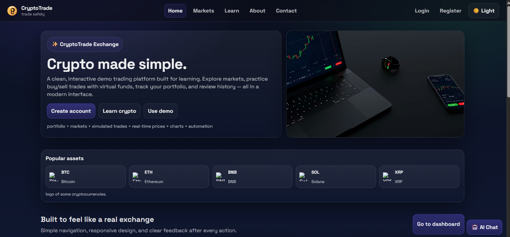

Final Year Capstone 2026 - Blockchain and FinTech
Cryptotrade - Cryptocurrency Trading Platform
Cryptotrade is a production-oriented simulation platform designed to train users in realistic crypto trading workflows without financial risk. It combines real-time market data, security controls, and an exchange-style user experience.
Live Demo: Open Cryptotrade

Problem and Motivation
- Beginners face financial loss when learning directly on live exchanges
- Most learning platforms are simplified and do not mirror real trading environments
- There is a gap between classroom learning and real-world trading readiness
Project Objectives
Implement secure JWT authentication and protected routes
Integrate live market feeds through CoinGecko API
Provide virtual wallet and portfolio tracking
Support multiple trading modes for practical learning
Add KYC flow with document upload and capture
Apply OTP verification for sensitive operations
Scope
In scope: authentication, dashboard, markets, trading modules, wallet simulation, KYC, OTP, and history logs.
Out of scope: real blockchain settlement, full legal compliance stack, payment gateways, and native mobile apps.
Architecture and Technology Stack
- Frontend: React 18+, Vite, React Router v6
- Backend: Node.js, Express.js, REST API design
- Database: MongoDB Atlas
- Real-time: Socket.IO for live market updates
- Services: CoinGecko API, Gmail SMTP, Twilio SMS
Core Features Delivered
- 6 public pages and 7 protected pages with authenticated access control
- 7 trading modes including Spot, Futures, Margin, Options, Convert, Staking, and Grid/Bot
- Virtual deposit and withdrawal simulation with OTP confirmation
- KYC workflow with admin review and status tracking from Pending to Approved/Rejected
- Transaction history, activity logs, and real-time notifications
- Integrated AI assistant for platform guidance and user support
Security Design
- JWT authentication with route protection and role-based access
- bcrypt password hashing with secure salt rounds
- Two-factor OTP through email and SMS channels
- KYC verification with admin approval controls
- Rate limiting and activity logging for API and user action monitoring
Key User Workflows
- Registration and secure login with tokenized sessions
- Deposit and withdrawal with OTP channel selection and verification
- KYC submission using upload/capture followed by admin validation
- Live trading flow from market monitoring to execution and history update
Outcomes and Validation
- All critical journeys manually tested and validated
- Stable end-to-end behavior across core modules
- More than 10 major features delivered with 7 trading modes
- Authentication and protected flows validated across user actions
Challenges Addressed
- Balanced realism and user safety through simulation-first architecture
- Improved OTP flow quality with a cleaner two-step interaction model
- Designed practical KYC governance with controlled admin approvals
Future Roadmap
- Automated testing coverage: unit, integration, and end-to-end suites
- Cloud-secured KYC document storage and improved data governance
- Production hardening with SSL, WAF, and active monitoring
- Next phase: wallet addresses and real blockchain settlement integration